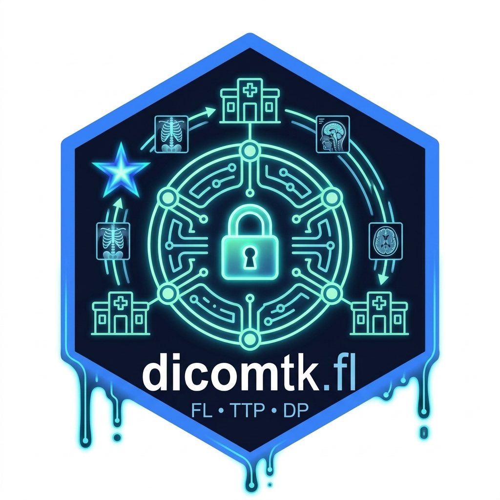

Package index
Trusted Third-Party (TTP) & PEP
Mainzelliste REST client with offline deterministic mode and AES-256-GCM / HMAC-SHA256 polymorphic pseudonymisation.
-
ttp_mainzelliste_client - Trusted Third-Party (TTP) Mainzelliste Client
-
pep_derive_site_token() - Derive a Project- and Site-Scoped Polymorphic Pseudonym (PEP)
-
pep_rekey_pseudonym() - Re-Key a PEP Token for a Different Project or Site
Privacy-Preserving Record Linkage (PPRL)
Frequency-hardened Bloom filters with randomized response bit-flipping, balanced constant-weight padding, and Dice linkage.
-
pprl_encode_bloom() - Encode Quasi-Identifiers into a Hardened PPRL Bloom Filter
-
pprl_dice_similarity() - Compute Sorensen-Dice Similarity Between Two Bloom Filters
-
pprl_link_cohorts() - Privacy-Preserving Record Linkage Across Two Site Cohorts
Differential Privacy (DP) Federated Statistics
Formal (epsilon, delta)-DP privacy budget accountant, k-anonymity small-cell suppression, Laplace/Gaussian mechanisms, and federated aggregation.
-
dp_budget_accountant - Differential Privacy Budget Accountant
-
dp_suppress_small_cells() - Suppress Small Contingency Cells for k-Anonymity
-
dp_laplace_mechanism() - Laplace Differential Privacy Mechanism
-
dp_gaussian_mechanism() - Gaussian (epsilon, delta)-Differential Privacy Mechanism
-
dp_federated_summary() - Compute (epsilon, delta)-DP Federated Site Summary
-
dp_aggregate_sites() - Aggregate Differentially Private Site Summaries Across a Federation
Federated Learning Site Exporters & Governance
Cryptographic site_admin outbound approval gate and ready-to-run site bundles for Flower, NVIDIA FLARE, and OpenFL.
-
fl_site_approval_gate - Cryptographic Site-Admin Outbound Approval Gate
-
fl_export_site_package() - Export a Governed Federated Learning Site Bundle (Flower, NVFlare, or OpenFL)
-
fl_capabilities() - Package-level federated audit & configuration helper